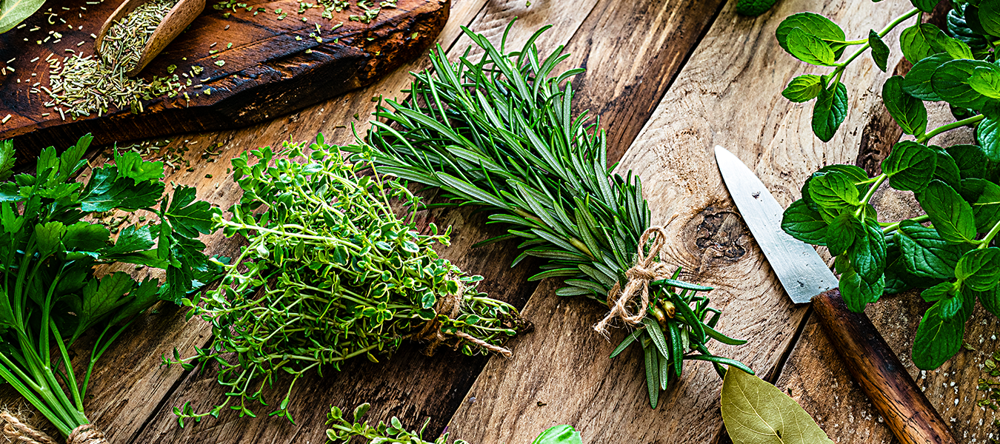
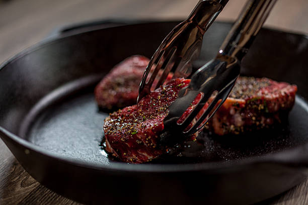
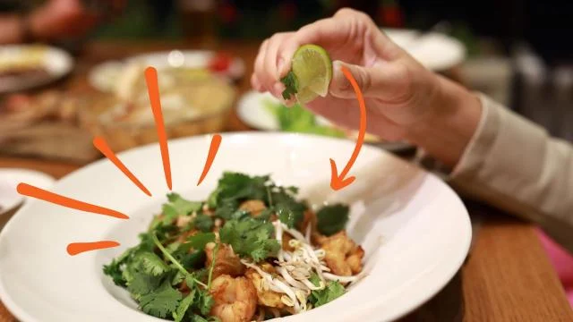

Dicas Culinárias
Truques e sugestões para deixar seus pratos ainda mais saborosos.

üßÇ Use ervas frescas no final do preparo para mais aroma.

üî• Pr√©-aque√ßa a frigideira para carnes mais suculentas.

üçã Lim√£o pode real√ßar sabores sem adicionar sal.